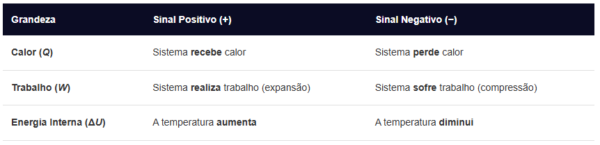

Primeira Lei da Termodinâmica
A Primeira Lei da Termodinâmica é o princípio da conservação da energia aplicado a sistemas térmicos. Ela afirma que a energia não pode ser criada nem destruída, apenas transformada de uma forma para outra.
Fórmula:
Matematicamente, a lei é expressa pela fórmula:
ΔU = Q - W
Onde:
ΔU: Variação da energia interna do sistema (medida em Joules, J).
Q: Quantidade de calor trocada com o meio externo (J).
W: Trabalho realizado pelo sistema ou sobre ele (J).
Convenção de Sinais:
Para aplicar a fórmula corretamente, é fundamental seguir a regra de sinais padrão:

Aplicação em Transformações Gasosas:
Isotérmica (Temperatura constante): Como a temperatura não muda, a energia interna também não varia (ΔU = 0). Logo, Q = W (todo calor recebido vira trabalho).
Isovolumétrica / Isocórica (Volume constante): Se o volume não muda, não há deslocamento e o trabalho é nulo (W = 0). Logo, ΔU = Q (todo calor recebido aumenta a energia interna).
Adiabática (Sem troca de calor): O sistema é isolado termicamente (Q = 0). Logo, ΔU = -W (se o gás se expande e realiza trabalho, ele gasta sua própria energia interna e esfria).
Cíclica (O gás retorna ao estado inicial): Como o ponto de partida e chegada são os mesmos, a variação da energia interna no ciclo completo é nula (ΔU = 0), resultando em Q = W.